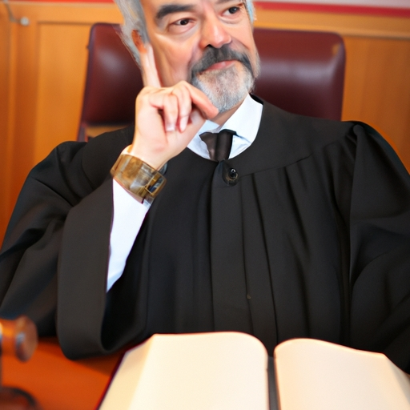

News
Notarization
Notarization
Notary Seals Stamps
Apostille Certificates
Certification of Documents
Authentication of Signatures
Verification of Identities
Affidavits and Oaths
Witnessing of Signatures
Travel Fee Reimbursement
Anotarization Fees
Power of Attorney Verifications
Mobile Notary Services
Mobile Notary Services
Remote Online Notaries RON
Video Conferencing
Electronic Signature Platforms
Digital Document Management
Document Scanning
Travel Fee Reimbursement
Mobile Printing
RealTime Document Tracking
MultiState Compliant
Background Checks
Signing Agents
Signing Agents
Notary Publics
Notary Publics
Jurats
Jurats
About Us
News
Benefits of Using a Mobile Notary
Benefits of using a Mobile Notary can be considerable!. Not only do they provide convenience and flexibility, but also save time and money.
Posted by
on 2023-07-03

Common Documents that Require Mobile Notarization
Mobile notarization is becoming increasingly popular as more and more people require documents to be notarized.. Common documents that necessitate mobile notarization include marriage certificates, adoption papers, wills, powers of attorney (POA), living trusts, vehicle titles and healthcare directives.
For some of these documents, the traditional means of having them notarized may not be feasible; whether due to travel restrictions or other complications.
Posted by
on 2023-07-03
Exploring State Regulations on Mobile Notaries
Mobile notaries are an important part of modern life, and exploring state regulations surrounding them is key to understanding how they operate.. For instance, in some states notaries must be licensed by the Secretary of State's office(!).
Posted by
on 2023-07-03
How to Access Professional, Quality Service With a Mobile Notary
Accessing professional, quality service with a mobile notary can be challenging for many people.. It's important to know the steps and requirements needed before you begin your search.
Posted by
on 2023-07-03
How to Choose the Right Mobile Notary
Choosing the right mobile notary can be a daunting task!. There's so much to consider - fees, services offered, and experience - that it can seem overwhelming.
Posted by
on 2023-07-03
How to Find Convenient and Secure Notarization with a Mobile Notary
Finding convenient and secure notarization with a mobile notary doesn't have to be difficult!. With just a few simple steps, you can make sure your documents are properly witnessed and certified.
Posted by
on 2023-07-03
How to Get On-the-Go Document Authentication Using Mobile Notaries
Getting on-the-go document authentication using mobile notaries is becoming increasingly popular!. In today's fast-paced world, people are often in need of quick and reliable document authentication services.
Posted by
on 2023-07-03
How to Get Your Documents Legally Certified by a Mobile Notary
Curious about how you can get your documents legally certified by a mobile notary?. It's not as hard as it sounds!
Posted by
on 2023-07-03
How to Make Notarizing Easier with Mobile Notary Services
Notarizing documents can be a hassle, but it doesn't have to be!. Thanks to mobile notary services, making sure your vital documents are legally binding is easier than ever.
Posted by
on 2023-07-03
How to Rely on the Expertise of a Professional Mobile Notary
Mobile notarization has become increasingly popular in recent years, due to its convenience and ability to provide a secure way to complete important documents without having to leave your home.. As such, it is important for individuals to rely on the expertise of a professional mobile notary when completing any legal paperwork.
Posted by
on 2023-07-03
How to Save Time and Money with a Mobile Notary
Saving time and money is essential for everyone's success!. With a mobile notary, you can do both in one go.
Posted by
on 2023-07-03
The Process of Hiring a Mobile Notary
The process of hiring a mobile notary can be tricky!. It's important to consider all the (options) before making a decision.
Posted by
on 2023-07-03
Tips for Working with a Mobile Notary
Working with a mobile notary can be daunting at first, but it doesn't have to be!. With the right tips and tricks, you'll be signing off on documents in no time (and even enjoy the process!).
Posted by
on 2023-07-03
Understanding the Role of a Mobile Notary
Mobile notaries play an invaluable role in our society.. Without them, many important legal and business transactions couldn't take place.
Posted by
on 2023-07-03
What Are The Benefits of Utilizing a Professional, Convenient, and Affordable Mobile Notary Service?
Utilizing a Professional, Convenient, and Affordable Mobile Notary Service can be incredibly beneficial! (It) offers numerous advantages to those who use it that are both time-saving and cost-effective.. Firstly, the service ensures accuracy in all documents.
Posted by
on 2023-07-03
What Benefits Does Having a Mobile Notary Bring to Your Business?
Having a mobile notary can be hugely beneficial for any business!. Not only does it save time and money (by avoiding unnecessary trips to the local notary office), but it also adds an extra layer of convenience and efficiency.
Posted by
on 2023-07-03
What Is the Advantages of Using a Mobile Notary Service?
Using a mobile notary service has many advantages!. Firstly, it saves time and money.
Posted by
on 2023-07-03
What Is the Best Way to Find a Reliable and Trustworthy Mobile Notary?
Finding a reliable and trustworthy mobile notary can be a daunting task!. But don't worry, there're certain steps you can take to ensure that the service provider you choose is one of the best.
Posted by
on 2023-07-03
What is a Mobile Notary and How Can It Help You?
A Mobile Notary is an individual, certified by the state, that can travel to you and notarize documents!. This service ensures that your documentation is legally binding and valid.
Posted by
on 2023-07-03
What is the Benefit of Hiring a Mobile Notary?
Hiring a mobile notary (can) be a huge advantage, especially when we don't have the time to visit the local office!. It is an efficient way of getting documents signed and verified without having to leave your home.
Posted by
on 2023-07-03
What is the Difference Between a Mobile Notary and Traditional Notary?
A mobile notary and traditional notary are two different services.. Mobile notaries go to the location of their clients, while traditional notaries stay at a particular place.
Posted by
on 2023-07-03
Old Posts
New Posts